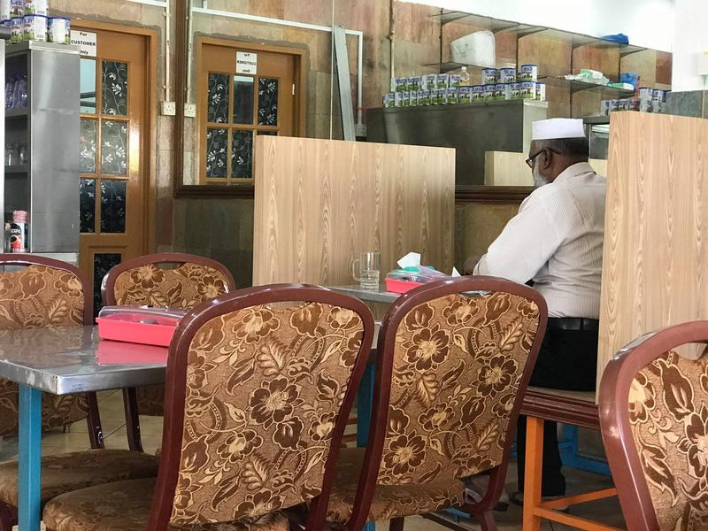
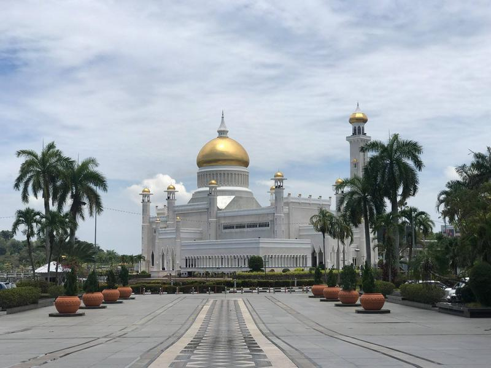
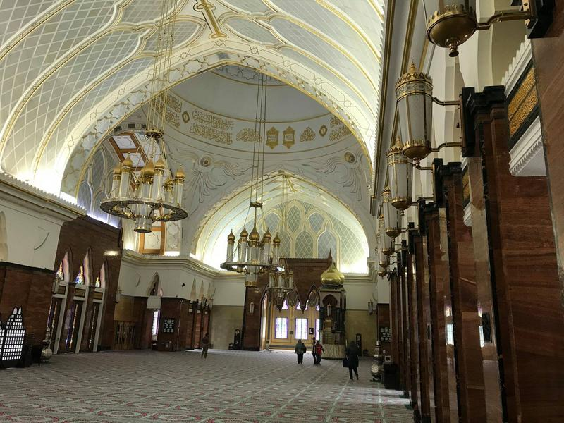
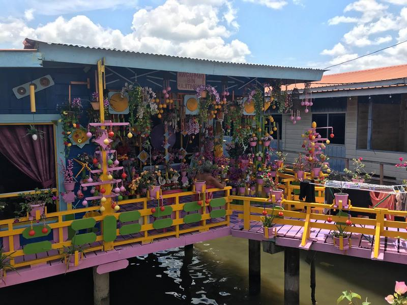
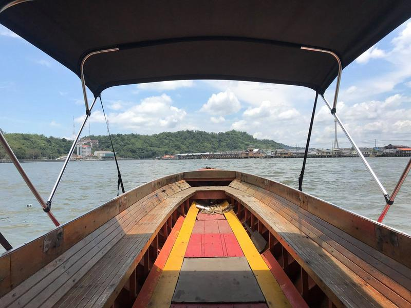
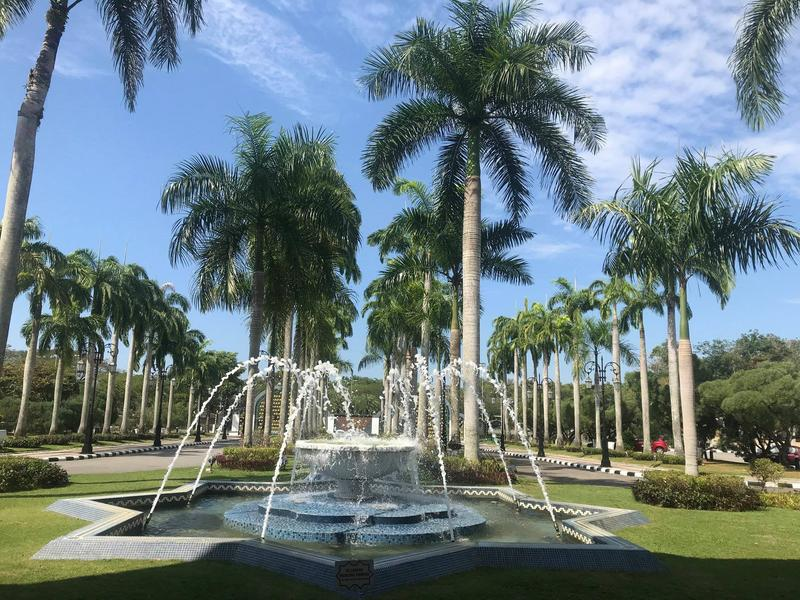

Brunej jaro 2019
Pár momentek z nejméně navštěvované země jihovýchodní Asie. Jak vypadá život v jedné z nejbohatších zemí světa?
Čekání na západ slunce na severním pobřeží Bruneje.
Momentka s brunejským vojákem. V dálce můžete vidět ropné věže. Příjmy Bruneje jsou zcela závislé na ropě.
Brunej je zemí migrantů. Obyčejné práce zajišťují zejména Bangladéšané, Indové či Indonésané. Takže na vesnicích najdete zejména indické restaurace.

Pravá indickobangladéšskobrunejská snídaně!
Brunej má asi nejhezčí bankovky, jaké jsem kdy viděl.
Takhle vypadají sámošky na vesnici. Litr vody v petce stojí prý více než litr benzínu.

Takhle žijí majetnější Brunejčané.
A takhle ti méně majetnější a přistěhovalci.
Portrét sultána hadži Hassanal Bolkiah Mu'izzaddin Waddaulah.
O kom se dnes píše v novinách? Překvapivě je to o sultánovi. Jako každý den.
Na vesnici toho opravdu moc není, tak se pojďme podívat s mým brunejským kamarádem do hlavního města Bandar Seri Begawan.
Tohle je mešita Sultána Omara Alího Saifuddína III. Opravdový skvost!

A mešita podruhé. Místo je vhodné zejména pro instagramery, nebudou muset z fotek retušovat lidi. Tady totiž žádní turisté nejsou.
A mešita potřetí, tentokrát při západu slunce.
Mešita Sultána Omara Alího Saifuddína III uvnitř.

Co je asi na Bruneji nejzajímavější, to je Kampong Ayer (vodní vesnice), neboli Benátky východu. Kolem 30 000 lidí žije v těchto domech pár metrů nad vodou.
Východní Benátky podruhé. Mají tu i obchody, školy, mešity, vše.
Uličky v Kampong Ayer.
Uličky v Kampong Ayer.
Hello Kitty domky v Kampong Ayer.

Do Kampong Ayer se jezdí po řece vodními taxíky za 1 brunejský dolar.

Jo a žijou tady krokodýli. V hlavním městě narazíte často na tyto cedulky. Nedoporučuji přespávat v noci pod širákem někde v blízkosti řeky.
Křižovatky v hlavním městě.
Památník získání nezávislosti na Velké Británii.
Muzeum věnované životu sultána. Je zde přísně zakázáno fotit, návštěvníci musí odevzdat mobily a vše, co mají. Jediné, co je možné vyfotit, je tento povoz, kterým sultána vozí při zvláštních příležitostech.
V muzeu najdete mnoho různých zajímavých předmětů, třeba golfové míčky, které byly poctěny úderem sultána ap. Co však byl naprostá pecka, to byla zlatá korunovační místnost, kterou navíc ještě hlídali vojáci. Něco podobného jsem ještě neviděl.
Strávil jsem v hlavním městě dva dny, a tak jsem měl dost času si ho celé projít. Třeba i brunejské nemocnice a vozy pro dárce krve.
Vodní taxi v hlavním městě Bandar Seri Begawan.
Vodní taxi v hlavním městě Bandar Seri Begawan.
Zatímco na brunejském venkově je levně, v případě hlavního města to platí méně. Prosím o minutu ticha za mých 150 Kč za tento párek v rohlíku. Děkuji.
Víte co? Pojďme se projít ještě do jedné mešity. Tohle je mešita Jame Asr Hassanil Bolkiah.
Vstup do modlitební místnosti.
Vnitřek mešity Jame Asr Hassanil Bolkiah. Opravdová nádhera!
Mešita Jame Asr Hassanil Bolkiah.
Okolí mešity Jame Asr Hassanil Bolkiah.

Brzy ráno mi letělo letadlo do další země, žádné volné taxíky ale nebyly k dispozici a na hotelový transfer bylo moc brzy, a tak jsem se prošel 10 km z centra až na letiště kolem různých rezidencí členů sultánovy rodiny.
S ještěrkou čekáme na odlet do další země. Kam to bude?